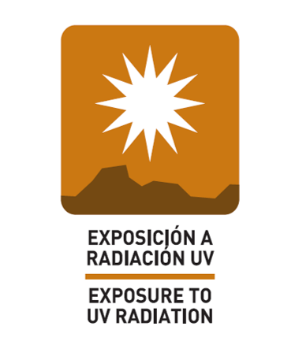

Exposicion a radiacion UV

Medidas de control
(*)Mantener conductas de foto proteccion
(*)Use Foto protector FPS 50+
(Propios Obligatorios, recomendacion para turistas)
(*)Uso de ropa cuello redondo, mangas
(*)Gorro del tipo campero y/o con viseras y proteccion para parte posterior del cuello
(*)Uso de gafas con proteccion UV
(propios obligatorios, recomendacion para turistas).
Exposures to UV radiation
Measures of control
(*)Use photo protector FPS 50+
(own obligatory, recommendation for tourists)
(*)Wear round neck clothes, long sleeves and long trousers
(*)Camping hat type and/or with sun visors and protection to the back of the neck.
(*)Use of glasses with UV protection
(Own obligatory, recommendation for tourists).